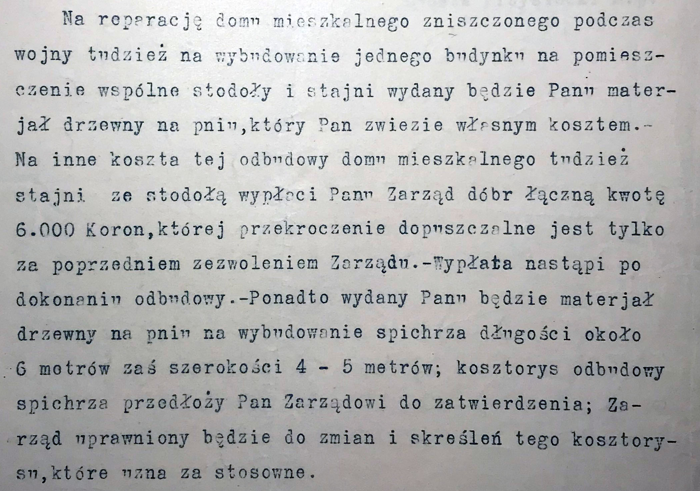

1. Grodzisko (49°40'33.90" N, 22°37'49.06" E)
Grodzisko pierścieniowate z XI-XIII w. usytuowane jest na południowy zachód od wsi, ok. 1 km na południe od Kopystanki, w lesie "Grabnik" (zob. Ciekawe miejsca). Niedaleko od grodu , na wschód znajduje się "cudowne źródełko", z którego wypływa potok Grabnik wpadający do rzeki Wiar. Podczas badań sondażowych przeprowadzonych w 1955 i 1957 roku na stanowisku znaleziono liczne ułamki naczyń wczesnośredniowiecznych pochodzących z przełomu X i XI w.
Wymiary grodu (118 x 43 m) świadczą o jego znacznej wielkości a tym samym dużej liczbie budowniczych i mieszkańców. Wschodnie i zachodnie stoki wzgórza, na którym usytuowane jest grodzisko, są bardzo strome. Stosunkowo łatwo dostępne zbocza przecięto rowami: południowym - o szerokości ok. 12 m i głębokości 3 m oraz północnym - o szerokości 4,7 m i głębokości 0,8 m. Na zewnętrznym łuku rowu od strony północnej widoczny jest podłużny nasyp o wysokości 0,8 m, przypuszczalnie pełniący niegdyś rolę wału. Szczyt wzgórza tworzy owalny majdan o wymiarach 98 x 56 m. Na majdanie nie zauważono wyraźnych śladów obwałowań, jedynie na jego południowym skraju widoczny jest niewielki garb - prawdopodobnie ślad po silnie rozmytym wale.

Grodzisko - rzuty
(źródło: Juliusz Marszałek - Katalog grodzisk i zamczysk w Karpatach, Wyd. Stanisław Kryciński, Warszawa 1993)

Grodzisko (w centrum) - numeryczny model terenu (mapy.geoportal.gov.pl)
Według tradycji na grodzisku w lesie "Grabnik" stał niegdyś zamek (kasztel) i podobno jeszcze dziś można tam znaleźć resztki cegieł. Miejsce to nazywane jest Zamczyskiem. Ponoć jest tam bardzo głęboka studnia i podziemne przejście do Rybotycz.
Więcej informacji: Mons Grodzysko, Wczesnośredniowieczna warownia w Kopystnie.
2. Cerkiew, cmentarz, dzwonnica (49°40'58.94" N, 22°38'19.99" E)
Parafia obrządku wschodniego istniała w Kopysnie już w 1507 r. (1408 r. ?) Obecną, murowaną z kamienia polnego, greckokatolicką cerkiew filialną p.w. Opieki NMP zbudowano w 1821 r. (pierwotnie p.w. Bogurodzicy Pokrow; zaliczona do IV grupy zabytków) (zob. też Ciekawe miejsca).
Cerkiew (1959 r.)
Została wzniesiona na rzucie wydłużonego prostokąta z trójbocznym zamknięciem od wschodu. Od południa, niewielka nowsza zakrystia. Prezbiterium wydzielone arkadą. Sklepienie pozorne kolebkowe o łuku obniżonym. Chór muzyczny drewniany, nadwieszony. Dach siodłowy kryty blachą, na nim wieżyczka na sygnaturkę z latarnią.
Ikonostas z połowy XIX w. Ołtarzyk w prezbiterium o tradycjach barokowych, w nim ołtarz Chrystusa pomiędzy świętymi. Cztery ołtarze boczne o tradycjach barokowych (XIX w.). Dwa krucyfiksy – malowany oraz rzeźbiony o charakterze ludowym. Benedykcjonał pokryty blachą trybowaną.
Chrzcielnica ufundowana w 1893 r. przez Piotra Krupę (ojciec Michała Krupy "Sadowego")
W 1823 r. przedłużono budynek ku zachodowi. Natrafiono wtedy na stary grób jakiegoś duchownego pochowanego pod wcześniej tu istniejącą świątynią. Mógł nim być władyka Michał. W roku 1929 przeprowadzono remont kaplicy. We wnętrzu cerkwi ikonostas namalowany w 1854 r. przez malarza cerkiewnego Józefa Lisikiewicza, który osiedlił się w drugiej połowie XIX w.(ur. 1790 r., zm. 2 kwietnia 1874 r.) w Trójcy i mieszkał w domu pod nr 62.
Według danych archiwalnych z 1852 roku [4], cerkiew (działka budowlana nr 29) była własnością Cerkwi greckokatolickiej, a dzwonnica i cmentarz wokół niej (działka nr 653) były własnością gminy (wsi) Kopysno i taki stan prawny trwał do czasu przejęcia nieruchomości przez Państwo polskie na mocy dekretu z dnia 28 września 1949 r. (Dz.U. z 1949 r. Nr 53, poz. 404 - isap.sejm.gov.pl).
Wykaz proboszczów i administratorów sprawujących posługę w cerkwi będącej filią parafii w Rybotyczach zawiera załącznik w "Dokumentach do pobrania" - Wykaz księży greckokatolickich z lat 1828-1939 [12].
Po II wojnie światowej (lata 50-te) cerkiew przeznaczona była do rozbiórki. Zapisano ją jednak jako kaplica cmentarna i w ten sposób ocalała.
Obok cerkwi znajduje się parawanowa murowana dzwonnica z 1821 r. (na tynku widnieje rok 1932, co może oznaczać datę jej remontu) - zob. Ciekawe miejsca.
Obecnie działka nr 70, na której znajduje się cerkiew, dzwonnica i cmentarz, jest własnością Skarbu Państwa reprezentowanego przez Starostę Powiatu Przemyskiego. Według ewidencji gruntów i budynków cerkiew jest w użytkowaniu Kościoła katolickiego w Rybotyczach, natomiast cmentarz jest zarządzany przez Gminę Fredropol.
Cerkiew wraz z dzwonnicą i cmentarzem zostały wpisane do rejestru zabytków nieruchomych województwa podkarpackiego - nr rej. A-463 z dnia 1 grudnia 2010 r.
W Archiwum Państwowym w Przemyślu znajduje się "Inwentarz cerkiewny filii Kopysno" z 1928 r. (jednostka aktowa 56/142/0/-/6061).
Fotografie cerkwi i dzwonnicy wykonane w latach 80. XX w. znaleźć można na stronach: pslava.info i us.archive.org.
***
Usytuowanie cerkwi i cmentarza według map z XIX i XXI wieku.
(Kolorem czerwonym z lewej i zielonym z prawej podano numery działek)
3. Dwór (49°40'46.43" N, 22°38'25.11" E)
Do dnia dzisiejszego nie zachowały sie dokumenty, które mogłyby poświadczyć lokalizację "dworzyszcza", o którym mowa w akcie nadania wsi z 12 marca 1408 r. Musiał on być, jak sądzą niektórzy, usytuowany na wybitnie obronnym miejscu, niedaleko "grodziska".
Według inwentarza z 1726 r. [14] do folwarku, na który składał się dwór i zabudowania gospodarcze, prowadziły dwuskrzydłowe wrota wykonane z heblowanych desek, przykryte daszkiem osadzonym na drewnianych kulach. Dwór był kryty gontem i składał się z przedsionka i 5 izb. W jednej z nich znajdował się komin kwadratowy, prosty, wylepiony gliną, a przy nim piec kaflowy i dwie ławy. Jedną z izb stanowiła piekarnia, w niej był gliniany piec piekarski, ława, żłób dla bydła, przegroda dla cieląt, drabinka i żłobek. Obok dworu znajdował się spichlerz kryty gontem, obora opleciona chrustem oraz gumno wraz z szopą oplecioną chrustem, na słupach i pokrytą częściowo gontem i słomą. Całość zabudowań była ogrodzona drewnianym płotem.
Szczegółowy opis dworu oraz innych obiektów znajduje się w opracowaniu "Akta klucza rybotyckiego" (zespół 56/2223/0/1 i 2) dostępnym w Archiwum Państwowym w Przemyślu.
Dwór we władaniu rodziny Tyszkowskich zbudowany był z drewna, na fundamencie z kamienia i cegły o wymiarach ok. 9 x 19 m. Wejście do dworu znajdowało się od strony płd.-wsch. Obok dworu był staw, wokół którego rosły wierzby płaczące (źródełko - 49°40'45.86" N, 22°38'24.45" E), stajnia, stodoła i spichlerz.
Dwór na mapie z 1852 r.
Podczas I wojny światowej dwór został poważnie uszkodzony (zob. na stronie - Lata 1914 - 1918 (I wojna światowa). Dzierżawca dworu i innych dóbr Tyszkowskich, Antoni Jankowski, w umowie dzierżawy został zobowiązany do reparacji dworu.

Fragment kopii umowy dzierżawy
W 1939 r., po opuszczeniu dworu przez rodzinę Jankowskich, został on rozebrany przez miejscową ludność i spalony. Pozostały fragmenty umocnień ziemnych otaczających nieistniejące już zabudowania dworskie, wały otaczające staw oraz niektóre drzewa (zob. Ciekawe miejsca).
4. Kapliczka (49°40'55.11" N, 22°38'33.11" E)
Przydrożna, murowana zwana “kapliczką św. Jana”, w części otynkowana o przekroju zbliżonym do kwadratu i wysokości 2 m; pokryta daszkiem namiotowym, niegdyś podbitym gontem, obecnie wykonanym z drewna.
Kapliczka - rzut
Została ustawiona na pamiątkę zniesienia pańszczyzny w 1848 r. W kapliczce znajduje się figurka przedstawiająca św. Jana, która w latach 70. ubiegłego wieku znikła w nieznanych okolicznościach i po wielu latach powróciła (zob. Aktualności, Ciekawe miejsca).
Figurka św. Jana (1963 r.)
Kapliczka - widok z przodu (1963 r.)
Kapliczka - widok z tyłu (1963 r.)
5. Horbysko (49°40'48.89" N, 22°38'17.90" E)
Ok. 200 m od miejsca po dworze znajduje się kulminacja zwana Horbysko - fragment ugoru wśród łąk z zaklęśnięciem na szczycie (zob. Ciekawe miejsca, Filmy). Według tradycji tu właśnie był pochowany władyka Michał Kopystyński. Mieszkańcy pamiętają jeszcze metalowy krzyż na kamiennym cokole stojący na Horbysku. Na mapach z czasów Austro-Węgier miejsce to zostało oznaczone znakiem krzyża (zob. Kartografia archiwalna ).
6. Domy
We wsi zachowało się kilka starych chałup zrębowych; budowane były również chaty typu przysłupowego. Zabudowa zrębowa jak i przysłupowa charakteryzowała się tym, że pod jednym dachem łączono część mieszkalną i inwentarską.
{kind=link}
{kind=link}
{kind=link}
{kind=link}
{kind=link}
{kind=link}
{kind=link}